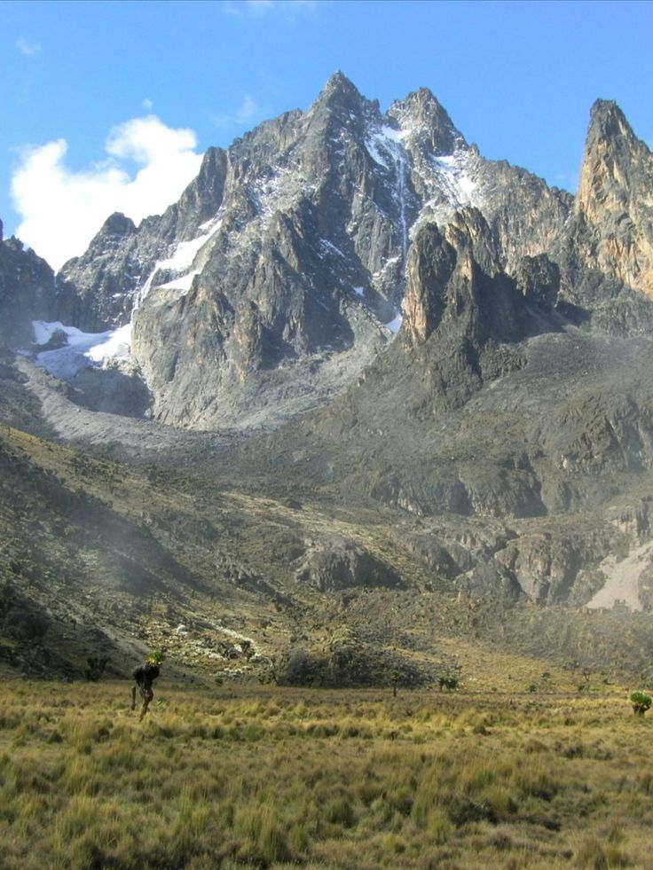
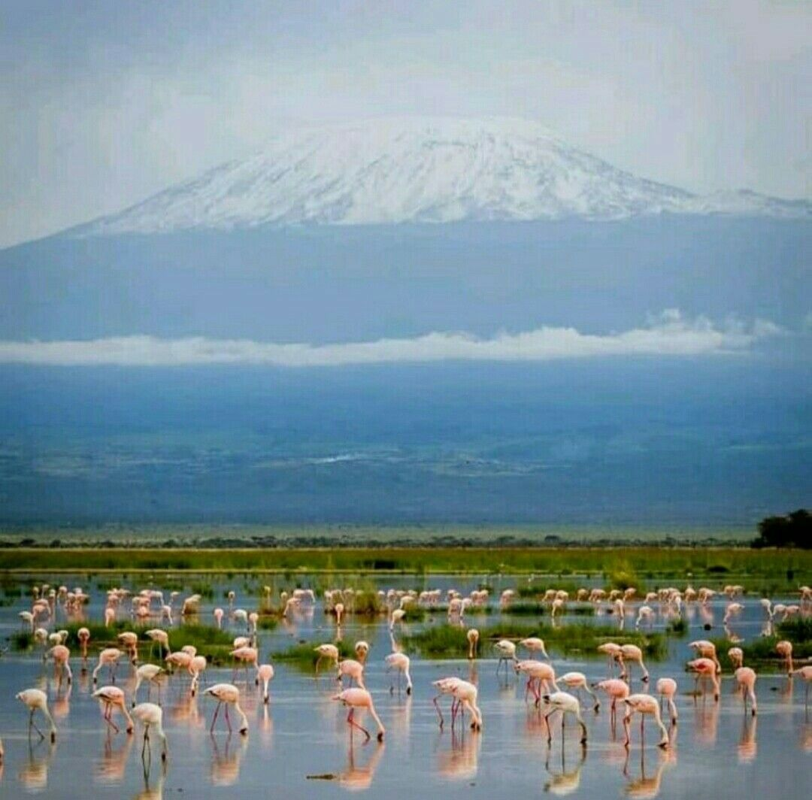
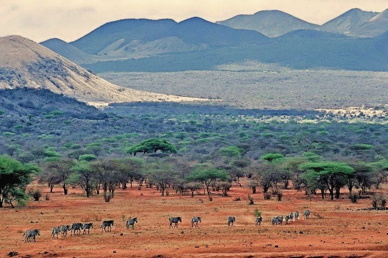
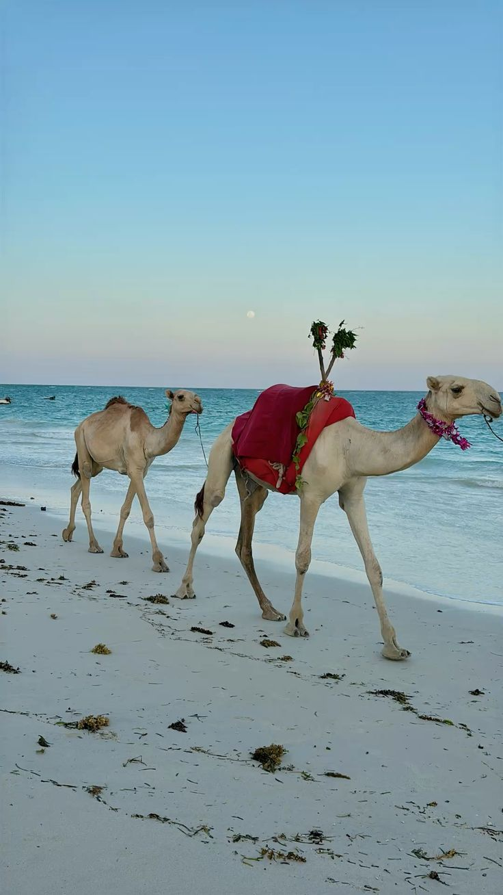
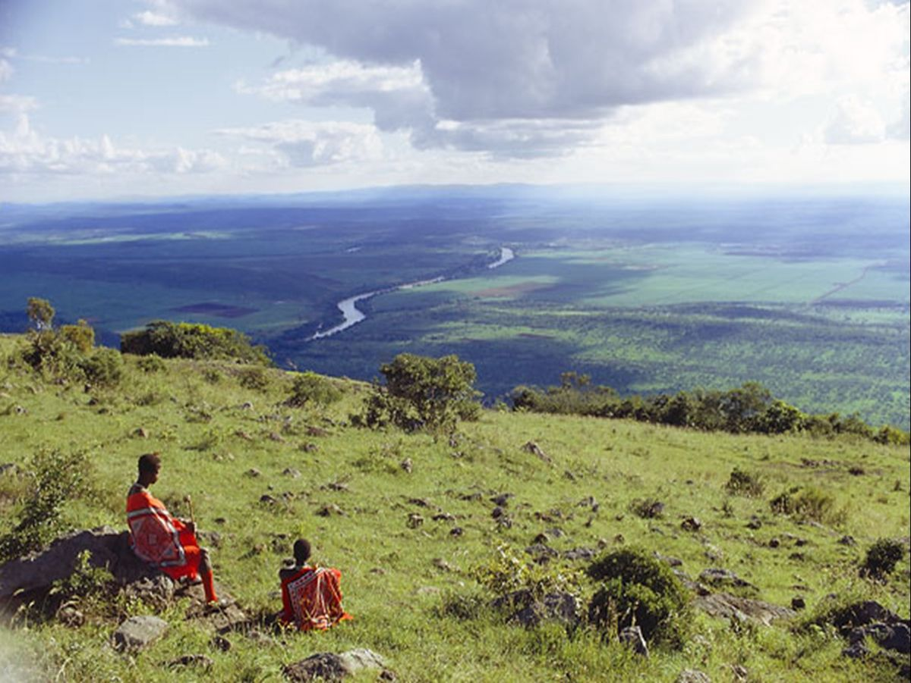
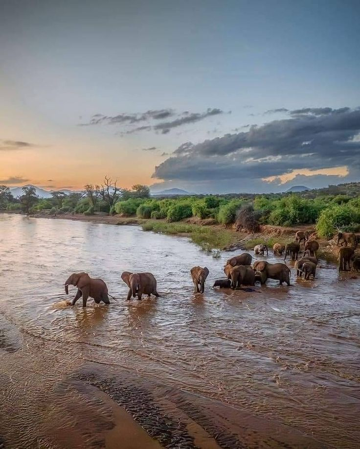
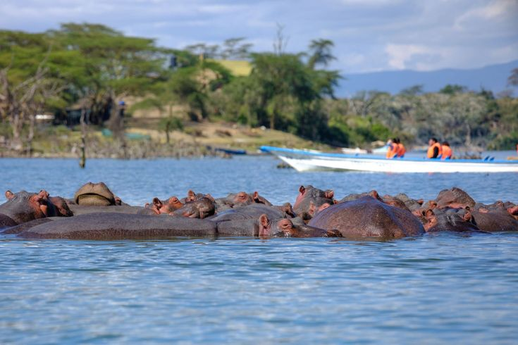

Masai Mara National Reserve
Rift Valley Region, Kenya
The Masai Mara is Kenya's most famous national reserve, covering approximately 1,510 square kilometers. It's renowned for the Great Migration, where millions of wildebeest and zebras cross the savanna annually. Experience encounters with the "Big Five" (lions, elephants, buffalo, leopards, and rhinos) and immerse yourself in the traditional culture of the Maasai people.
Highlights:
- Great Migration (July - August)
- Big Five wildlife viewing
- Hot air balloon safaris
- Maasai cultural experiences
- Photography opportunities

Mount Kenya
Central Kenya Highlands
Mount Kenya, Africa's second-highest peak at 5,199 meters, offers an exhilarating climbing experience. The mountain is a UNESCO World Heritage Site with diverse ecosystems ranging from tropical forests to alpine meadows. Whether you're an experienced climber or a beginner, there are routes suitable for all levels.
Highlights:
- Summit climbing (Point Lenana or Batian)
- Forest hiking trails
- Scenic views of the Great Rift Valley
- Diverse wildlife and flora
- Mountain lodge accommodations

Amboseli National Park
📍 Southern Kenya, Near Tanzania Border
Amboseli is famous for its stunning views of Mount Kilimanjaro and its large elephant herds. The park sits on the edge of Kilimanjaro and offers exceptional wildlife viewing opportunities. The seasonal swamps provide reliable water sources that attract diverse wildlife year-round.
Highlights:
- Kilimanjaro views
- Elephant herds
- Observation Hill for panoramic views
- Diverse bird species
- Cultural experiences with Maasai communities

Tsavo National Park
📍 Southeastern Kenya
Tsavo is Africa's largest national park, split into Tsavo East and Tsavo West. Known for its red elephants (due to red volcanic soil), the park offers vast landscapes, diverse wildlife, and the stunning Mzima Springs. The park covers over 20,000 square kilometers of pristine wilderness.
Highlights:
- Red elephants and wildlife
- Mzima Springs with hippos and crocodiles
- Chyulu Hills scenery
- Volcanic landscapes
- Excellent game viewing

Lake Nakuru National Park
Great Rift Valley Region
Lake Nakuru is known for its stunning pink flamingos, creating one of nature's most spectacular displays. The alkaline lake attracts thousands of flamingos along with rhinos, lions, and other wildlife. The park offers beautiful scenery with acacia woodland and papyrus swamps.
Highlights:
- Pink flamingo flocks
- Black and white rhino sightings
- Crater Lake views
- Pelican colonies
- Scenic landscape photography

Hell's Gate National Park
📍 Great Rift Valley
Hell's Gate offers unique opportunities for adventure activities like hiking, rock climbing, and cycling. The park features dramatic gorges, geothermal hot springs, and diverse wildlife. Named after the narrow gap in the Rift Valley escarpment, it's a must-visit for adventure enthusiasts.
Highlights:
- Hiking and gorge exploration
- Geothermal hot springs
- Rock climbing opportunities
- Biking trails
- Scenic cliff formations

Kilifi Beach & Coastal Region
📍 Coastal Region, Kenya
Kilifi offers pristine white-sand beaches, turquoise waters, and rich cultural heritage. The historic Stone Town, coral reefs, and island hopping opportunities make it a perfect beach destination. Experience traditional Swahili culture and enjoy water activities.
Highlights:
- White-sand beaches
- Coral reef snorkeling and diving
- Stone Town historic sites
- Island hopping tours
- Traditional Swahili culture

Great Rift Valley
📍 Runs through Kenya from North to South
The Great Rift Valley is one of the world's most dramatic geological features. Spanning over 6,000 kilometers, it offers breathtaking landscapes, multiple lakes, and diverse wildlife. The scenic drives through the valley provide some of Kenya's most spectacular views.
Highlights:
- Panoramic escarpment views
- Multiple alkaline lakes
- Diverse ecosystems
- Photography opportunities
- Geological significance

Samburu National Reserve
📍 Northern Kenya
Samburu offers a raw and authentic safari experience with unique wildlife species. The semi-arid landscape is home to special species like the Samburu-specific zebra, giraffe, and oryx. Experience traditional Samburu warrior culture and exceptional wildlife photography opportunities.
Highlights:
- Unique wildlife species
- Samburu culture immersion
- River game viewing
- Photography expeditions
- Authentic safari experience

Naivasha Lake
📍 Central Kenya
Naivasha Lake is a stunning freshwater lake known for its vibrant flamingo populations and diverse birdlife. The lake is surrounded by lush vegetation and offers excellent opportunities for birdwatching, fishing, and water sports.
Highlights:
- Vibrant flamingo populations
- Diverse birdlife
- Surrounding lush vegetation
- Excellent birdwatching opportunities
- Fishing and water sports
- Boat tours on the lake